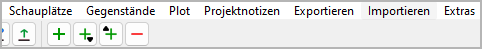
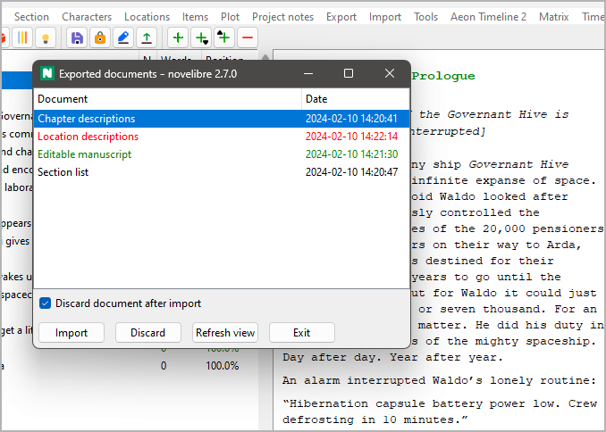

Importieren-Menü
Das Projekt aus einem zuvor exportierten ODF-Dokument aktualisieren

Mit the Importieren main-Menü entry, können Sie open a pop-up window with a list containing previously exported ODT documents that can be re-imported, thus updating the current project.

The document types and dates are shown.
Dokuments that are newer than the project file are highlighted in green.
Dokuments that cannot be imported because they are open in Writer are highlighted in red.
You can update the project from a document either by double-clicking on the list entry, or by selecting the document and clicking on the Importieren Schaltfläche.
You can delete documents by selecting them and clicking on the Verwerfen Schaltfläche.
Hinweis
Discard means: Rename by adding the extension .bak to the file name.
After closing a listed document in Writer while the Exportierened documents window is open können Sie click on the Ansicht aktualisieren Schaltfläche.
Discarding documents after updating the project
Documents with split sections are always automatically discarded after re-import in order to avoid confusion about the changed section or chapter structure. Concerning re-imported documents that do not require modifying the project structure, you have three choices:
- Dokumente nur verwerfen, falls Abschnitte geteilt wurden
This is the default behavior. The ODF documents are kept for future use.
- Dokumente nach dem Import immer verwerfen
After updating the novelibre project from an re-imported ODF document, this document is automatically discarded. To discard means: rename it by adding the .bak extension to its file name.
- Auch gesperrte Dokumente importieren; nicht verwerfen
This is for fast and frequent project updates while keeping the ODF documents open in Writer or Calc for editing.
Wichtig
If you split sections in your ODT document können Sienot import it while open in Writer. This is because novelibre cannot discard it when locked by Writer.